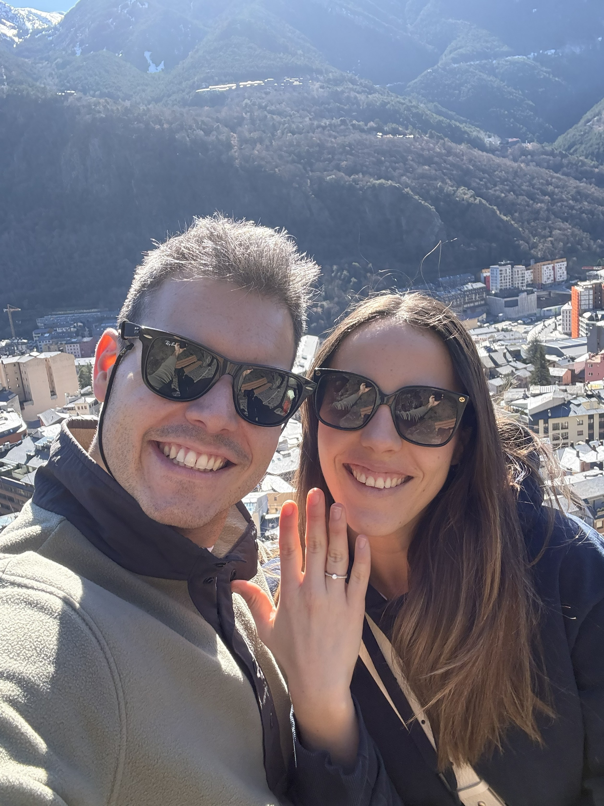
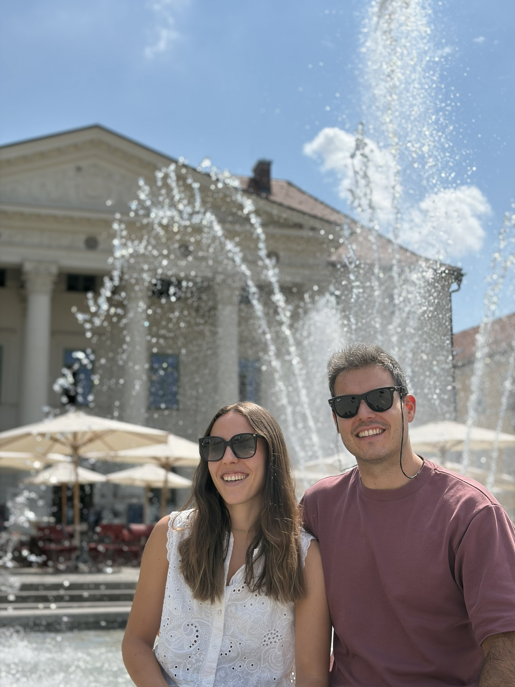

Belén i Xevi
19 · 06 · 2027
Málaga
Ens casem!
Fa molt de temps que caminem junts, pero ara ha arribat el moment de fer el gran pas. Ens faria una il·lusió immensa que ens acompanyéssiu en aquest dia tan especial per a nosaltres.

Programa del dia
Aquest és l'horari previst per al gran dia. T'hi esperem!

Informació pràctica
Algunes preguntes habituals que us poden ser útils.
Si l'allotjament està a prop del santuari, recomanem anar-hi caminant. Si no, en transport públic, taxi o algun altre servei (Uber, Cabify, Bolt, etc).
El cotxe particular és una opció, però és difícil aparcar per la zona.
Hi haurà service d'autobús que sortirà un cop acabada la cerimònia.
També es pot anar amb cotxe particular i aparcar a la finca, on hi ha una zona de parking habilitada.
Sí! Habrá servicio de autobús una vez finalizada la fiesta, que irá de la finca al centro.
Si sois un grupo de gente que se aloja lejos del centro, hablad con los novios para ver si es posible añadir una parada extra del autobús en esa ubicación.
Per descomptat! Tothom és benvingut al nostre casament.
Recordeu apuntar-los al formulari d'inscripció.
Animem tots els convidats a anar elegants i còmodes alhora.
Per a la festa, recomanem portar un calçat de recanvi que sigui més còmode per aguantar el màxim de temps possible.
El millor regal és compartir el dia amb vosaltres.
Si a més voleu fer una aportació, ens seria de gran ajuda per a la nostra lluna de mel:
IBAN: ES80 1583 0001 1791 4883 1300

Confirmació d'assistència
Si us plau, confirma la teva assistència abans de l'1 de Juny.
✓
Gràcies! Hem rebut la teva confirmació.